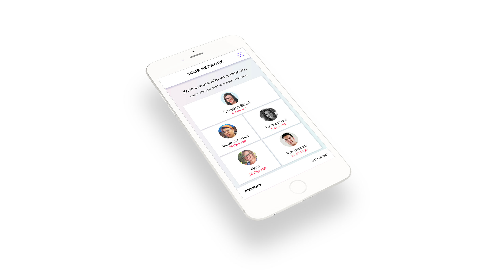
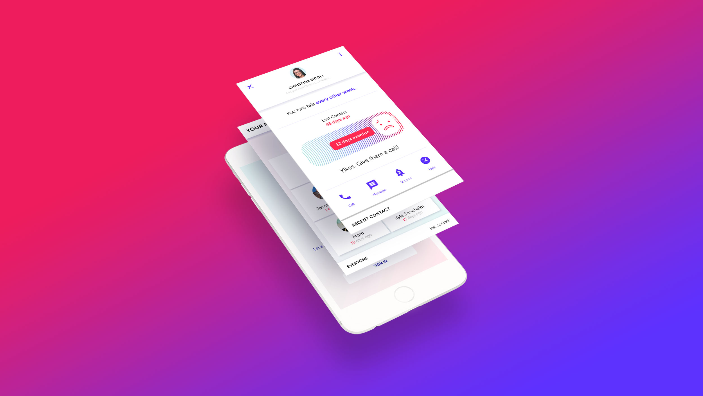
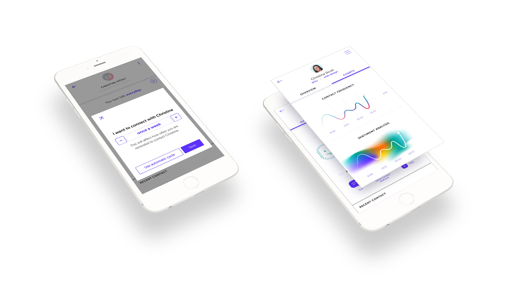

2017
A mobile app that reminds users to reach out to contacts who they haven't talked to in a while. The reminders are based on how frequently a user normally talks with their contacts, and notifies users when they fall out of their normal communication cycle. A beta version of the app was formerly on the Google Play store but has been taken off.
The app syncs the user's contacts
The main screen is a ist of contacts that are highest priority to connect with (based on maintaining communication frequency)
When a user taps on a contact, they get a screen showing frequency of contact, last contact, and a prompt if contact is overdue
The user can modify how often they want to keep in contact if it's different from their current pattern of contact, and view graphs of how their frequency has changed along with sentiment analysis